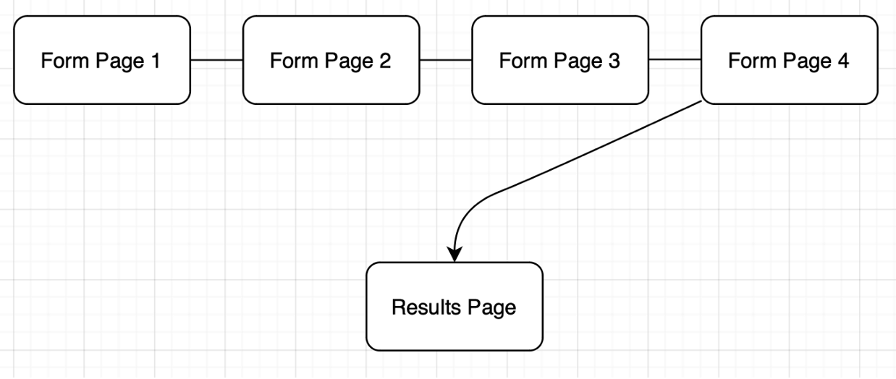

Leadership SKills for Team Member Success
Isaac Cooper 11/11/24
(Webpage made 11/16)
Click here to view the current Client ProjectProject Overview:
Description of my proposed website. Includes:
o The purpose of this web-app is to use a multi-page form to analyze information entered by each surveyee
o The intended users are potential clients’ employees who would like an analytical analysis of Leadership skills.
o The content will include 5 webpages each containing a form that asks quantifiable questions that store cookies to deliver a score/result to the user at the end of the form.
Client Information:
o Tom Cooper
o BrightHill Group
o info@BrightHillGroup.com
o 240-668-4799
Site Map:
Below is my produced site map for my application: (you can use https://www.gloomaps.com/or something similar).

Page Design [one section needed for each page/sub-page]:
Each page listed in my site map:
o Form Page 1
o The purpose of this page is to inquiry
o The user will be the surveyee (client’s employees)
o The content of the page:
This is a page where I am asking users to enter data
These fields will not need validations
The page will contain buttons and hyper links
The user will be able to use actions such as, clicking navigation buttons and a submission button at the end of the form.
o Form Page 2
o The purpose of this page is to inquiry
o The user will be the surveyee (client’s employees)
o The content of the page:
This is a page where I am asking users to enter data
These fields will not need validations
The page will contain buttons and hyper links
The user will be able to use actions such as, clicking navigation buttons and a submission button at the end of the form.
o Form Page 3
o The purpose of this page is to inquiry
o The user will be the surveyee (client’s employees)
o The content of the page:
This is a page where I am asking users to enter data
These fields will not need validations
The page will contain buttons and hyper links
The user will be able to use actions such as, clicking navigation buttons and a submission button at the end of the form.
o Form Page 4
o The purpose of this page is to inquiry
o The user will be the surveyee (client’s employees)
o The content of the page:
This is a page where I am asking users to enter data
These fields will not need validations
The page will contain buttons and hyper links
The user will be able to use actions such as, clicking navigation buttons and a submission button at the end of the form.
o Results
o The purpose of this page is to show the results of the quiz and what the user scored
o The user will be the surveyee (client’s employees)
o The content of the page:
This is not a page where I am asking users to enter data
It will not contain buttons or hyperlinks or drop downs
No Actions
Will contain the dynamic results of the quiz depending on what the user scored
Dynamic Functionality on the Website:
These pages will be able to store the data entered, and interpret quantitative data to deliver meaningful results through a formula provided through BrightHill. The Results webpage should have the java script ‘interactivity’.
https://coopacon.github.io/itis3135/byo_intro.html